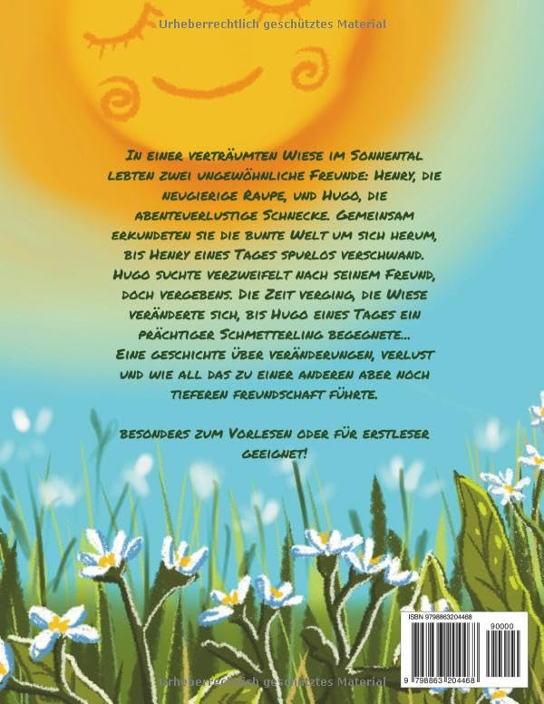
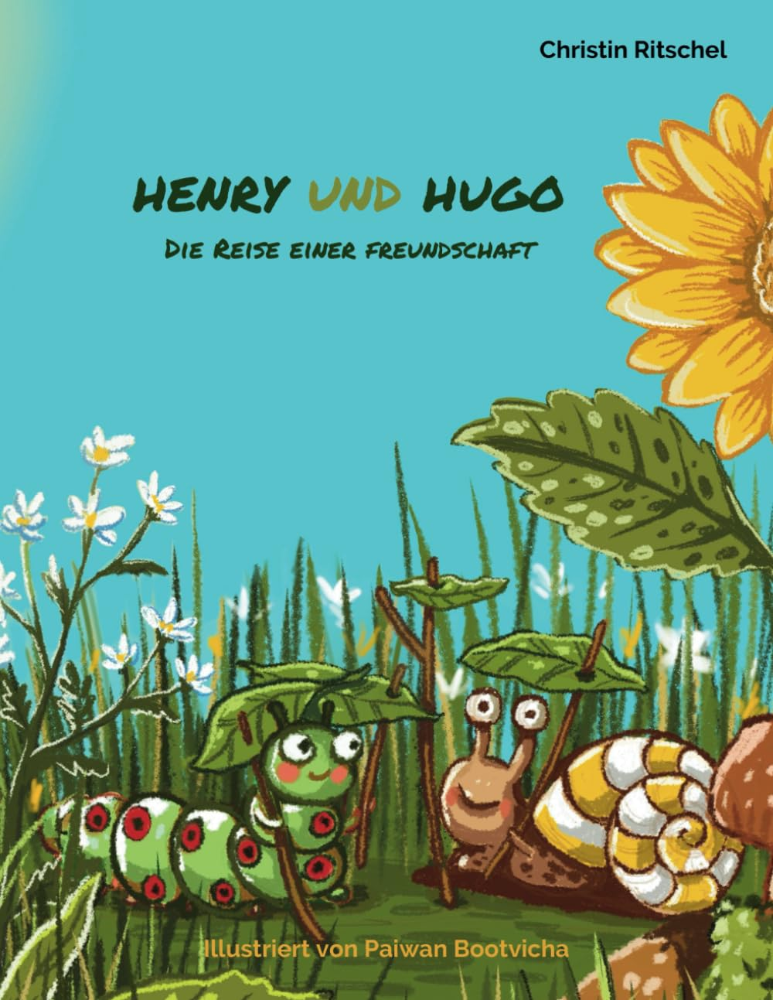
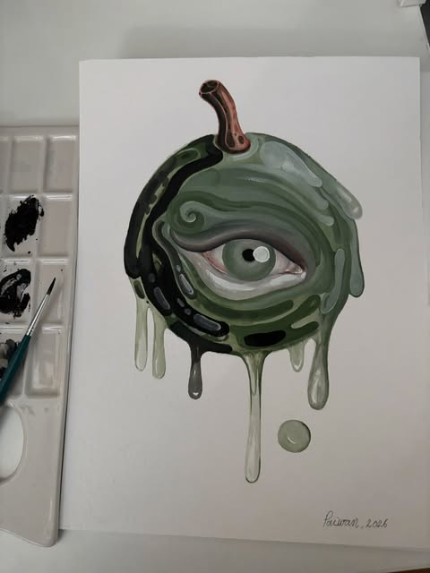
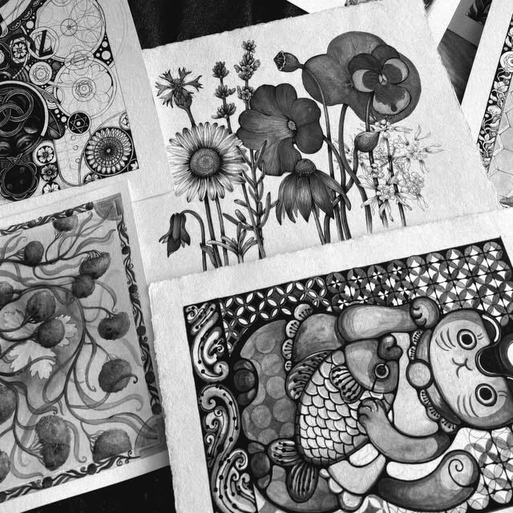

Botanical · Fantasy · Surreal
Paintings that grow like gardens
Ink, watercolor and gouache by self-taught artist Paiwan Bootvicha. Picture books, botanical studies and surreal paintings, all by hand.


Children's books
Henry und Hugo
Die Reise einer Freundschaft
Written by Christin Ritschel · Illustrated by Paiwan Bootvicha
- Picture book
- Ages 4-9
- 29 pages
- German
- 2023
Henry, a curious caterpillar, and Hugo, an adventurous snail, spend their days exploring a dreamy meadow in Sonnental, until Henry vanishes without a trace. A gentle story about change, loss and a friendship that grows even deeper, told in dreamy pictures and large letters for reading aloud and for first readers.
Curious about the illustrations?
Readers, parents and teachers often ask how Henry and Hugo came to life. Write me or send a message; I'm happy to share sketches and the story behind the pictures.
Always happy to talk about Henry and Hugo ✿
Studio
From the desk, painted by hand
Most pieces start as a quick study of something real: a fig, a lotus pod, a mushroom found on a walk. Then imagination takes over and the plant turns into something stranger.
- 01ObserveStudies from real plants, fruit and objects.
- 02SketchPencil and ink linework in the sketchbook.
- 03PaintLayer by layer in watercolor and gouache.
Say hello anytime ✿

- I love painting:
- Botanical studies
- Surreal portraits
- Fruit and seed pods
- Mushrooms
- Ink patterns
Selected works
One of a kind, painted by hand
Every piece is an original on paper, painted in ink, watercolor, gouache and sometimes coffee. New work and process videos show up on Instagram first.
Ember Tree
Watercolor and gouache
Starry Night Study
Gouache on paper, after Van Gogh
Lily Pond Dream
Gouache on paper
Mushroom Chapel
Ink and watercolor
Blue Muse
Watercolor and ink
Coffee Rose
Coffee and ink on paper

Ink Garden Series
Ink on paper, set of 4
Plums on Cobalt
Gouache on paper
Want to see more? Follow the studio on Instagram.
Sketches and process videos too ✿
About and contact
Let's talk about things that grow
I paint botanical, fantasy and surreal worlds in ink, watercolor and gouache. Everything starts on paper, by hand, usually with a plant on the desk and a cup of coffee going cold.
Say hello
For questions about the work, the book, exhibitions or press, write me an email or send a DM on Instagram.
hello@paiwan.art · @paiwan.art